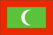
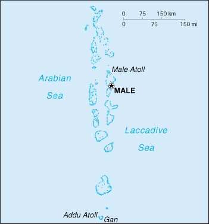

{kind=link}


| Maldives |  |
|
|  | |
| Introduction |
Background: The Maldives were long a sultanate, first under Dutch and then under British protection. They became a republic in 1968, three years after independence. Tourism and fishing are being developed on the archipelago.
| Geography |
Location: Southern Asia, group of atolls in the Indian Ocean, south-southwest of India
Geographic coordinates: 3 15 N, 73 00 E
Map references: Asia
Area:
total:
300 sq km
land:
300 sq km
water:
0 sq km
Area - comparative: about 1.7 times the size of Washington, DC
Land boundaries: 0 km
Coastline: 644 km
Maritime claims:
measured from claimed archipelagic baselines
contiguous zone:
24 nm
exclusive economic zone:
200 nm
territorial sea:
12 nm
Climate: tropical; hot, humid; dry, northeast monsoon (November to March); rainy, southwest monsoon (June to August)
Terrain: flat, with white sandy beaches
Elevation extremes:
lowest point:
Indian Ocean 0 m
highest point:
unnamed location on Wilingili island in the Addu Atoll 2.4 m
Natural resources: fish
Land use:
arable land:
10%
permanent crops:
0%
permanent pastures:
3%
forests and woodland:
3%
other:
84% (1993 est.)
Irrigated land: NA sq km
Natural hazards: low level of islands makes them very sensitive to sea level rise
Environment - current issues: depletion of freshwater aquifers threatens water supplies; global warming and sea level rise; coral reef bleaching
Environment - international agreements:
party to:
Biodiversity, Climate Change, Climate Change-Kyoto Protocol, Hazardous Wastes, Ozone Layer Protection
signed, but not ratified:
Law of the Sea
Geography - note: 1,190 coral islands grouped into 26 atolls (200 inhabited islands, plus 80 islands with tourist resorts); archipelago of strategic location astride and along major sea lanes in Indian Ocean
| People |
Population: 301,475 (July 2000 est.)
Age structure:
0-14 years:
46% (male 71,273; female 67,323)
15-64 years:
51% (male 78,598; female 75,331)
65 years and over:
3% (male 4,666; female 4,284) (2000 est.)
Population growth rate: 3.06% (2000 est.)
Birth rate: 38.96 births/1,000 population (2000 est.)
Death rate: 8.32 deaths/1,000 population (2000 est.)
Net migration rate: 0 migrant(s)/1,000 population (2000 est.)
Sex ratio:
at birth:
1.05 male(s)/female
under 15 years:
1.06 male(s)/female
15-64 years:
1.04 male(s)/female
65 years and over:
1.09 male(s)/female
total population:
1.05 male(s)/female (2000 est.)
Infant mortality rate: 65.52 deaths/1,000 live births (2000 est.)
Life expectancy at birth:
total population:
62.2 years
male:
61.05 years
female:
63.4 years (2000 est.)
Total fertility rate: 5.62 children born/woman (2000 est.)
Nationality:
noun:
Maldivian(s)
adjective:
Maldivian
Ethnic groups: South Indians, Sinhalese, Arabs
Religions: Sunni Muslim
Languages: Maldivian Dhivehi (dialect of Sinhala, script derived from Arabic), English spoken by most government officials
Literacy:
definition:
age 15 and over can read and write
total population:
93.2%
male:
93.3%
female:
93% (1995 est.)
| Government |
Country name:
conventional long form:
Republic of Maldives
conventional short form:
Maldives
local long form:
Dhivehi Raajjeyge Jumhooriyyaa
local short form:
Dhivehi Raajje
Data code: MV
Government type: republic
Capital: Male
Administrative divisions: 19 atolls (atholhu, singular and plural) and 1 other first-order administrative division*; Alifu, Baa, Dhaalu, Faafu, Gaafu Alifu, Gaafu Dhaalu, Gnaviyani, Haa Alifu, Haa Dhaalu, Kaafu, Laamu, Lhaviyani, Maale*, Meemu, Noonu, Raa, Seenu, Shaviyani, Thaa, Vaavu
Independence: 26 July 1965 (from UK)
National holiday: Independence Day, 26 July (1965)
Constitution: adopted January 1998
Legal system: based on Islamic law with admixtures of English common law primarily in commercial matters; has not accepted compulsory ICJ jurisdiction
Suffrage: 21 years of age; universal
Executive branch:
chief of state:
President Maumoon Abdul GAYOOM (since 11 November 1978); note - the president is both the chief of state and head of government
head of government:
President Maumoon Abdul GAYOOM (since 11 November 1978); note - the president is both the chief of state and head of government
cabinet:
appointed by the president; note - need not be members of Majlis
elections:
president nominated by the Majlis and then that nomination must be ratified by a national referendum (at least a 51% approval margin is required); president elected for a five-year term; election last held 16 October 1998 (next to be held NA October 2003)
election results:
President Maumoon Abdul GAYOOM reelected; percent of popular vote - Maumoon Abdul GAYOOM 90.9%
Legislative branch:
unicameral People's Council or Majlis (50 seats; 42 elected by popular vote, 8 appointed by the president; members serve five-year terms)
elections:
last held 20 November 1999 (next to be held NA November 2004)
election results:
percent of vote - NA; seats - independents 42
Judicial branch: High Court
Political parties and leaders: although political parties are not banned, none exist
International organization participation: AsDB, C, CCC, CP, ESCAP, FAO, G-77, IBRD, ICAO, IDA, IDB, IFAD, IFC, IMF, IMO, Intelsat (nonsignatory user), Interpol, IOC, ITU, NAM, OIC, OPCW, SAARC, UN, UNCTAD, UNESCO, UNIDO, UPU, WHO, WMO, WToO, WTrO
Diplomatic representation in the US: Maldives does not have an embassy in the US, but does have a Permanent Mission to the UN in New York
Diplomatic representation from the US: the US does not have an embassy in Maldives; the US Ambassador to Sri Lanka is accredited to Maldives and makes periodic visits there
Flag description: red with a large green rectangle in the center bearing a vertical white crescent; the closed side of the crescent is on the hoist side of the flag
| Economy |
Economy - overview: Tourism, Maldives largest industry, accounts for 20% of GDP and more than 60% of the Maldives' foreign exchange receipts. Over 90% of government tax revenue comes from import duties and tourism-related taxes. Almost 400,000 tourists visited the islands in 1998. Fishing is a second leading sector. The Maldivian Government began an economic reform program in 1989 initially by lifting import quotas and opening some exports to the private sector. Subsequently, it has liberalized regulations to allow more foreign investment. Agriculture and manufacturing continue to play a minor role in the economy, constrained by the limited availability of cultivable land and the shortage of domestic labor. Most staple foods must be imported. Industry, which consists mainly of garment production, boat building, and handicrafts, accounts for about 18% of GDP. Maldivian authorities worry about the impact of erosion and possible global warming on their low-lying country; 80% of the area is one meter or less above sea level.
GDP: purchasing power parity - $540 million (1999 est.)
GDP - real growth rate: 7% (1999 est.)
GDP - per capita: purchasing power parity - $1,800 (1999 est.)
GDP - composition by sector:
agriculture:
20%
industry:
18%
services:
62% (1999 est.)
Population below poverty line: NA%
Household income or consumption by percentage share:
lowest 10%:
NA%
highest 10%:
NA%
Inflation rate (consumer prices): 3% (1999 est.)
Labor force: 67,000 (1995)
Labor force - by occupation: agriculture 22%, industry 18%, services 60% (1995)
Unemployment rate: NEGL%
Budget:
revenues:
$166 million (excluding foreign grants)
expenditures:
$192 million, including capital expenditures of $80 million (1999 est.)
Industries: fish processing, tourism, shipping, boat building, coconut processing, garments, woven mats, rope, handicrafts, coral and sand mining
Industrial production growth rate: 4.4% (1996 est.)
Electricity - production: 85 million kWh (1998)
Electricity - production by source:
fossil fuel:
100%
hydro:
0%
nuclear:
0%
other:
0% (1998)
Electricity - consumption: 79 million kWh (1998)
Electricity - exports: 0 kWh (1998)
Electricity - imports: 0 kWh (1998)
Agriculture - products: coconuts, corn, sweet potatoes; fish
Exports: $98 million (f.o.b., 1998)
Exports - commodities: fish, clothing
Exports - partners: US, UK, Sri Lanka, Japan
Imports: $312 million (f.o.b., 1998)
Imports - commodities: consumer goods, intermediate and capital goods, petroleum products
Imports - partners: Singapore, India, Sri Lanka, Japan, Canada
Debt - external: $188 million (1998 est.)
Economic aid - recipient: $NA
Currency: 1 rufiyaa (Rf) = 100 laari
Exchange rates: rufiyaa (Rf) per US$1 - 11.770 (fixed rate since 1995)
Fiscal year: calendar year
| Communications |
Telephones - main lines in use: 21,000 (1999)
Telephones - mobile cellular: 300 (1999)
Telephone system:
minimal domestic and international facilities
domestic:
interatoll communication through microwave links; all inhabited islands are connected with telephone and fax service
international:
satellite earth station - 3 Intelsat (Indian Ocean)
Radio broadcast stations: AM 1, FM 1, shortwave 1 (1998)
Radios: 35,000 (1999)
Television broadcast stations: 1 (1997)
Televisions: 10,000 (1999)
Internet Service Providers (ISPs): NA
| Transportation |
Railways: 0 km
Highways:
total:
NA km
paved:
NA km
unpaved:
NA km; note - Male has 9.6 km of coral highways within the city (1988 est.)
Ports and harbors: Gan, Male
Merchant marine:
total:
20 ships (1,000 GRT or over) totaling 69,599 GRT/105,599 DWT
ships by type:
cargo 17, container 1, petroleum tanker 1, short-sea passenger 1 (1999 est.)
Airports: 5 (1999 est.)
Airports - with paved runways:
total:
2
over 3,047 m:
1
2,438 to 3,047 m:
1 (1999 est.)
Airports - with unpaved runways:
total:
3
914 to 1,523 m:
3 (1999 est.)
| Military |
Military branches: National Security Service (paramilitary police force)
Military manpower - availability:
males age 15-49:
68,940 (2000 est.)
Military manpower - fit for military service:
males age 15-49:
38,402 (2000 est.)
Military expenditures - dollar figure: $NA
Military expenditures - percent of GDP: NA%
| Transnational Issues |
Disputes - international: none